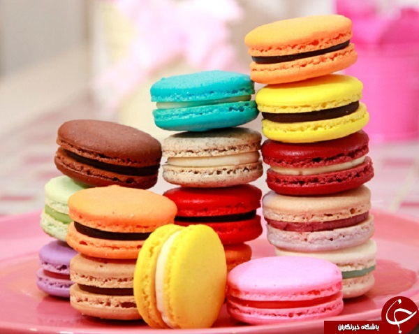

شیرینی ماکارون یکی از شیرینیهای محبوب فرانسوی است که به رنگها و
طعمهای مختلف تهیه و با انواع کرمها مانند باتر کریم و یا مرباهای مختلف
پر میشود. این شیرینی فرانسوی در اصل با سفیده تخم مرغ و شکر تهیه میشود.
از دیگر مواد لازم برای این شیرینی پودر شکر یا پودر قند، پودر بادام یا
پودر بادام زمینی و رنگ طبیعی است.
معمولاً وسط این شیرینی با شکلات سفید، خامه و یا مربا پر میشود. شیرینی
ماکارون جزو کیک و شیرینی - شیرینی خشک است.
زمان آماده سازی مواد اولیه و مایحتاج آن حدودا ۱ ساعت و است.